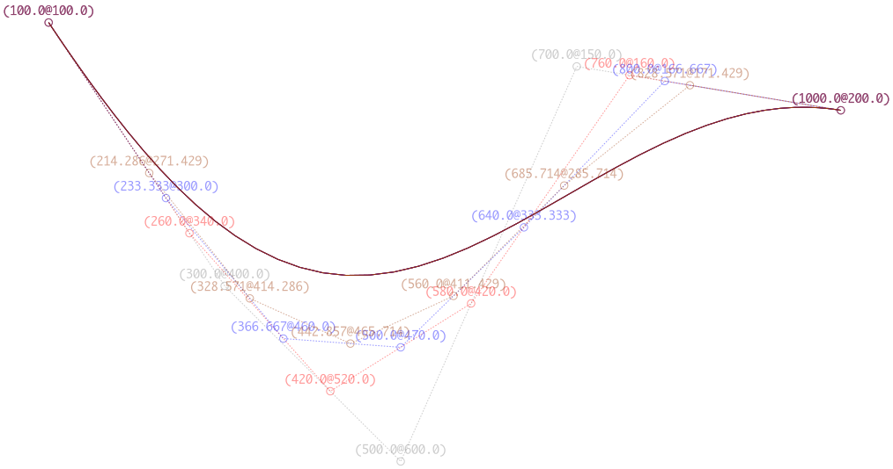
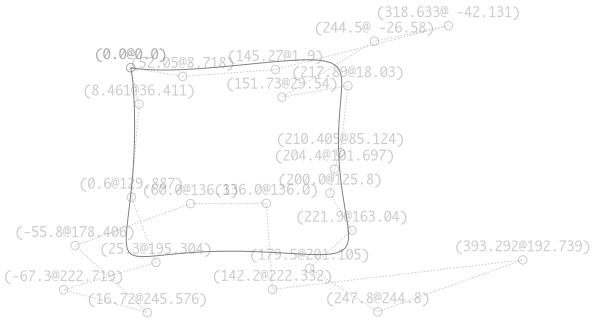

10. Computational geometry¶
10.1. Parametric curves¶
We work with points
and think them as elements of an Euclidean space \({\mathbb E}^2\) which has a metric \(d({\bf v}_1,{\bf v}_2)=\vert \vert {\bf v}_1-{\bf v}_2 \vert \vert\). A function \(\Phi: {\mathbb E}^3\rightarrow {\mathbb E}^3\) is an affine transformation if it lefts baricentric combinations untouched; for the sake of clarity, given \({\bf v}=\sum_{i=1}^n w_i {\bf v}_i\) and \(\sum_{i=1}^n w_i=1\) then
if \(\Phi\) is affine. A curve \({\bf C}\) is represented in parametric form when the coordinates of each of its points are expressed separately as a function of a third variable called parameter \(u\),
where \(u \in [a,b]\). As a first example, the curve \({\bf C}(u)=(u^2, u^3-u)\), where \(u \in [-2,2]\), has the graphical

and is coded as
"RSBasicShapeExamples, protocol lines"
lineParametricNeil
^ RSParametricLineXY new
param: ((-2 to: 2) linspace: 100);
x: [ :t | t raisedTo: 2 ] y: [ :t | (t raisedTo: 3) - t ];
scale: 10
finally, it doesn’t admit a functional representation. Now consider the curve \({\bf C}(u)=(cos(u), sin(u))\) where \(u \in [0,2\pi]\) has the graphical

and is coded as
"RSBasicShapeExamples, protocol lines"
lineParametricUnitCircle
^ RSParametricLineXY new
param: ((0 to: Float pi * 2) linspace: 100);
x: [ :t | t cos ] y: [ :t | t sin ];
scale: 100
Another trigonometric curve \({\bf C}(u)=(cos(3u) cos(u), sin(u) cos(3u))\) where \(\ u \in [0,\pi]\), aka trochoid, has the graphical
and is coded as
"RSBasicShapeExamples, protocol lines"
lineParametricTrochoid
^ RSParametricLineXY new
param: ((0 to: Float pi) linspace: 100);
x: [ :t | t cos * (3 * t) cos ] y: [ :t | t sin * (3 * t) cos ];
scale: 100
Another trigonometric curve \({\bf C}(u)=(cos(3u) cos(u), sin(u) cos(3u))\) where \(\ u \in [0,\pi]\), aka trochoid, has the graphical

and is coded as
"RSBasicShapeExamples, protocol lines"
lineParametricLissajous
^ RSParametricLineXY new
param: ((0 to: Float pi * 2) linspace: 1000);
x: [ :t | (3 * t) cos ] y: [ :t | (2 * t) sin ];
scale: 100
Another trigonometric curve \({\bf C}(u)=(cos(3u) cos(u), sin(u) cos(3u))\) where \(\ u \in [0,\pi]\), aka trochoid, has the graphical

and is coded as
"RSBasicShapeExamples, protocol lines"
lineParametricHypotrochoid
| s r d a b |
s := 5.
r := 3.
d := 5.
a := s - r.
b := a / r.
^ RSParametricLineXY new
param: ((-10 to: 10) linspace: 10000);
x: [ :t | a * t cos + (d * (b * t) cos) ]
y: [ :t | a * t sin - (d * (b * t) sin) ];
scale: 10
Another trigonometric curve \({\bf C}(u)=(cos(3u) cos(u), sin(u) cos(3u))\) where \(\ u \in [0,\pi]\), aka trochoid, has the graphical

and is coded as
"RSBasicShapeExamples, protocol lines"
lineParametricButterfly
^ RSParametricLineXY new
param: ((0 to: Float pi * 12) linspace: 10000);
x: [ :t |
t sin
* (t cos exp - (2 * (4 * t) cos) - ((t / 12) sin raisedTo: 5)) ]
y: [ :t |
t cos
* (t cos exp - (2 * (4 * t) cos) - ((t / 12) sin raisedTo: 5)) ];
scale: 30
10.2. Bezier curves¶
10.2.1. Closed control net¶
and is coded as
"RSBasicShapeExamples, protocol lines"
lineDeCasteljauLineClosedControlPoints
| points |
points := {
(1 @ 1).
(3 @ 4).
(5 @ 6).
(7 @ 8).
(10 @ 2).
(1 @ 1) }.
^ RSdeCasteljauLine new
samples: 50;
controlPoints: points;
scale: 100
10.2.2. Degree elevation¶
and is coded as
"RSBasicShapeExamples, protocol lines"
linesDeCasteljauLineDegreeElevation
| points bspline1 bspline2 bspline3 bspline4 |
points := {
(1 @ 1).
(3 @ 4).
(5 @ 6).
(7 @ (3 / 2)).
(10 @ 2) }.
bspline1 := RSdeCasteljauLine new
samples: 50;
controlPoints: points;
scale: 100.
bspline2 := bspline1 increment.
bspline3 := bspline2 increment.
bspline4 := bspline3 increment.
^ RSGroup
with: bspline1
with: bspline2
with: bspline3
with: bspline4
10.2.3. Designing notes¶
and is coded as
"RSBasicShapeExamples, protocol lines"
lineDeCasteljauLineNoteBox
| points |
points := {
(0 @ 0).
(8.461 @ 36.411).
(0.6 @ 129.887).
(25.3 @ 195.304).
(-67.3 @ 222.719).
(16.72 @ 245.576).
(-55.8 @ 178.406).
(60 @ 136.3).
(136 @ 136).
(142.2 @ 222.332).
(393.292 @ 192.739).
(247.8 @ 244.8).
(179.5 @ 201.105).
(221.9 @ 163.04).
(200 @ 125.8).
(204.4 @ 101.697).
(210.405 @ 85.124).
(217.89 @ 18.03).
(151.73 @ 29.54).
(244.5 @ -26.58).
(318.633 @ -42.131).
(145.27 @ 1.9).
(52.05 @ 8.718).
(0 @ 0) }.
^ RSdeCasteljauLine new
samples: 50;
controlPoints: points;
yourself
and is coded as
"RSBasicShapeExamples, protocol lines"
noteLoremIpsum
^ RSLabel new
text: (String loremIpsum: 50);
useDefaultCodeFont;
padded: Float goldenPlatinumRatio
withNoteDo: [ :aBox | aBox color: Color yellow translucent ]
and is coded as
"RSBasicShapeExamples, protocol lines"
noteInteger
^ RSLabel new
model: 541;
useDefaultCodeFont;
notedWithPad: Float goldenPlatinumRatio